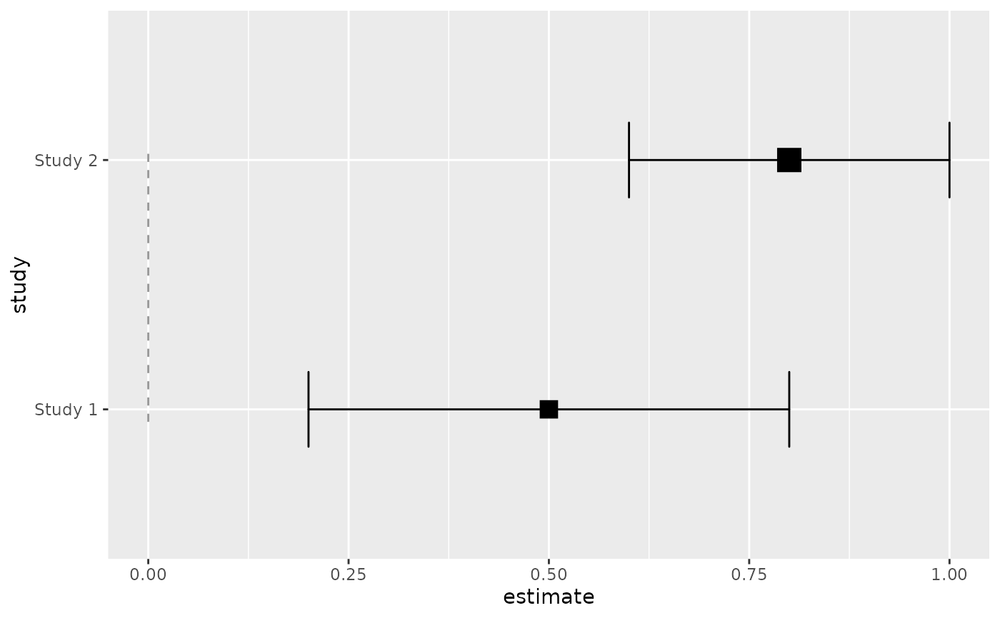

geom_forest_ref() draws a vertical reference line at the null effect
value — typically 0 for difference measures (MD, SMD) or 1 for ratio
measures (RR, OR, HR). The line indicates where no treatment effect exists.
Usage
geom_forest_ref(
mapping = NULL,
data = NULL,
...,
xintercept = 0,
na.rm = FALSE,
show.legend = NA,
inherit.aes = TRUE
)Arguments
- mapping
Set of aesthetic mappings created by
aes(). If specified andinherit.aes = TRUE(the default), it is combined with the default mapping at the top level of the plot. You must supplymappingif there is no plot mapping.- data
The data to be displayed in this layer. There are three options:
If
NULL, the default, the data is inherited from the plot data as specified in the call toggplot().A
data.frame, or other object, will override the plot data. All objects will be fortified to produce a data frame. Seefortify()for which variables will be created.A
functionwill be called with a single argument, the plot data. The return value must be adata.frame, and will be used as the layer data. Afunctioncan be created from aformula(e.g.~ head(.x, 10)).- ...
Other arguments passed on to
ggplot2::layer().- xintercept
X-axis intercept for the reference line. Default:
0(null effect for difference measures).- na.rm
If
FALSE(default), missing values are removed with a warning. IfTRUE, missing values are silently removed.- show.legend
logical. Should this layer be included in the legends?
NA, the default, includes if any aesthetics are mapped.FALSEnever includes, andTRUEalways includes. It can also be a named logical vector to finely select the aesthetics to display. To include legend keys for all levels, even when no data exists, useTRUE. IfNA, all levels are shown in legend, but unobserved levels are omitted.- inherit.aes
If
FALSE, overrides the default aesthetics, rather than combining with them. This is most useful for helper functions that define both data and aesthetics and shouldn't inherit behaviour from the default plot specification, e.g.annotation_borders().
Aesthetics
geom_forest_ref() understands the following aesthetics:
colour— line colour (default: "gray50")linewidth— line width (default: 0.5)linetype— line type (default: "dashed")alpha— transparency (default: 0.8)
Examples
library(ggplot2)
df <- data.frame(
study = c("Study 1", "Study 2"),
estimate = c(0.5, 0.8),
lower = c(0.2, 0.6),
upper = c(0.8, 1.0),
weight = c(1, 2)
)
ggplot(df, aes(y = study, x = estimate, xmin = lower,
xmax = upper, weight = weight)) +
geom_forest_ref(xintercept = 0) +
geom_forest_ci()
